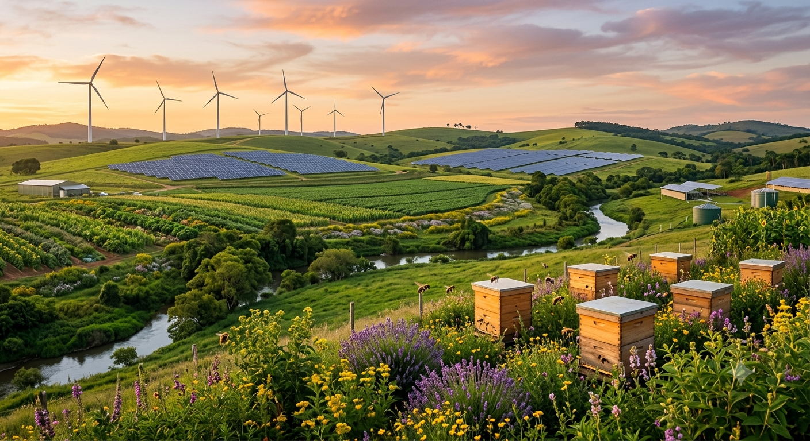
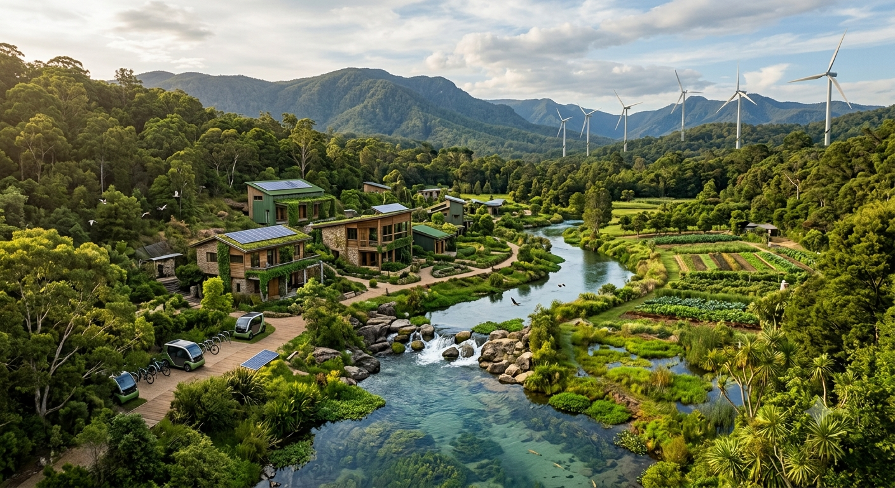
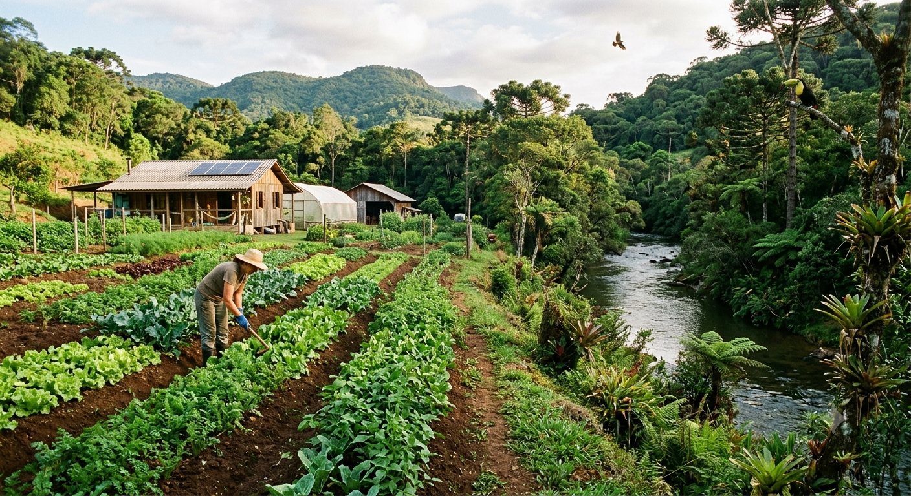
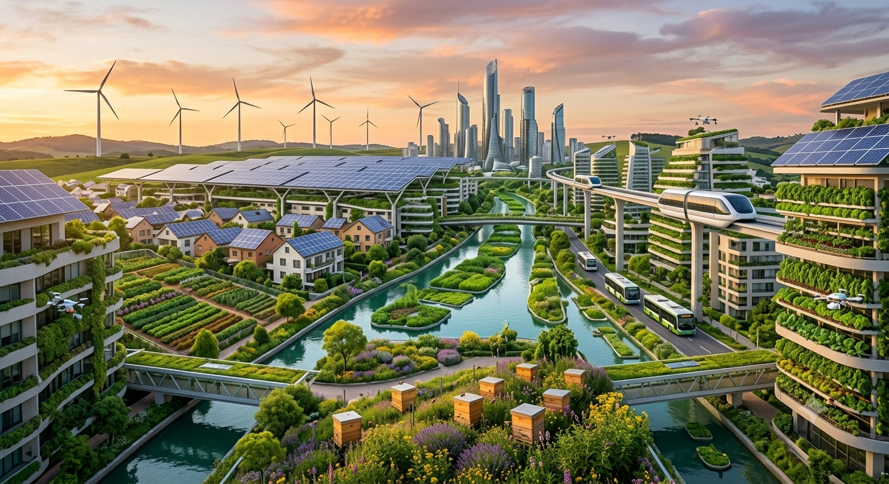

O que é Sustentabilidade?
Sustentabilidade é o conjunto de ações que busca atender às necessidades do presente sem comprometer as futuras gerações. Ela envolve o cuidado com o meio ambiente, a economia e a sociedade.
Quando utilizamos os recursos naturais de forma consciente, ajudamos a preservar a natureza e garantimos melhor qualidade de vida para todos.

Preservando o Meio Ambiente
A sustentabilidade é fundamental para garantir que os recursos naturais continuem disponíveis para as futuras gerações. Através de atitudes conscientes, como reciclar, economizar água e preservar áreas verdes, todos podem contribuir para um planeta mais saudável.

Ações Sustentáveis
- ♻️ Separar e reciclar o lixo.
- 💧 Economizar água.
- 💡 Evitar desperdício de energia.
- 🌳 Plantar árvores.
- 🚲 Utilizar meios de transporte sustentáveis.
🌱 Agrinho e Sustentabilidade
O Programa Agrinho incentiva atitudes responsáveis que ajudam a preservar o meio ambiente e fortalecer a relação entre o campo e a cidade.
A produção de alimentos, a preservação dos recursos naturais e a conscientização da população são fundamentais para um futuro sustentável.


🌿 Mensagem Ambiental
Clique no botão para receber uma mensagem de conscientização.
🌳 Árvores Plantadas Virtualmente
Cada clique representa uma árvore plantada simbolicamente.
0
💚 Nosso Compromisso
Cuidar do planeta é uma responsabilidade de todos. Com pequenas atitudes diárias podemos reduzir impactos ambientais e construir um futuro melhor para as próximas gerações.
📝 Quiz da Sustentabilidade
Responda às perguntas e descubra seu nível de consciência ambiental.
1. Você separa o lixo reciclável?
2. Você economiza água no dia a dia?
3. Você apaga as luzes ao sair dos cômodos?
4. Você valoriza alimentos produzidos de forma sustentável?